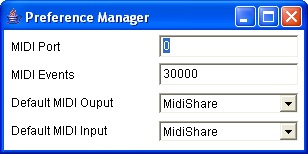

Preference window

The preference window allows to set globals MIDI settings
for the Elody application:
- MIDI Port: base port number used by all Elody MidiShare
applications
- MIDI Events: number of desired MidiShare events
- Default MIDI Output: the default output application
for all Elody MidiShare applications
- Default MIDI Input: the default input application
for all Elody MidiShare applications
Elody saves and restores (if possible) the set of all connections
between the Elody MidiShare applications and other opened MidiShare
applications on the system.